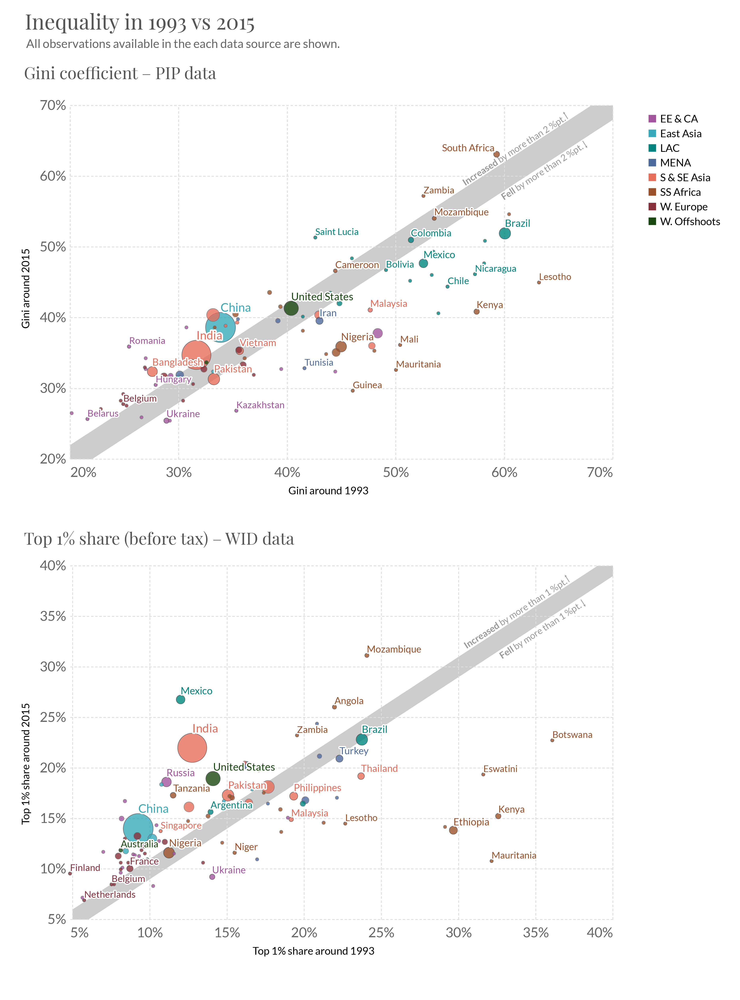
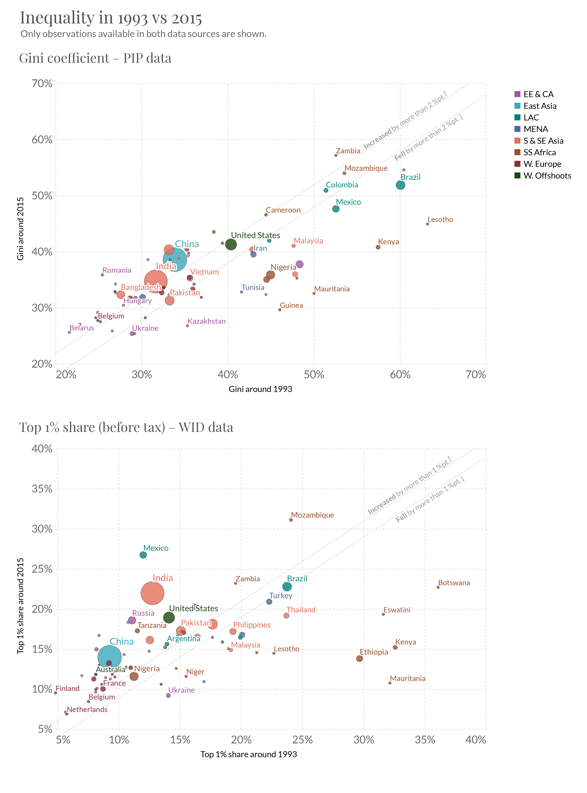
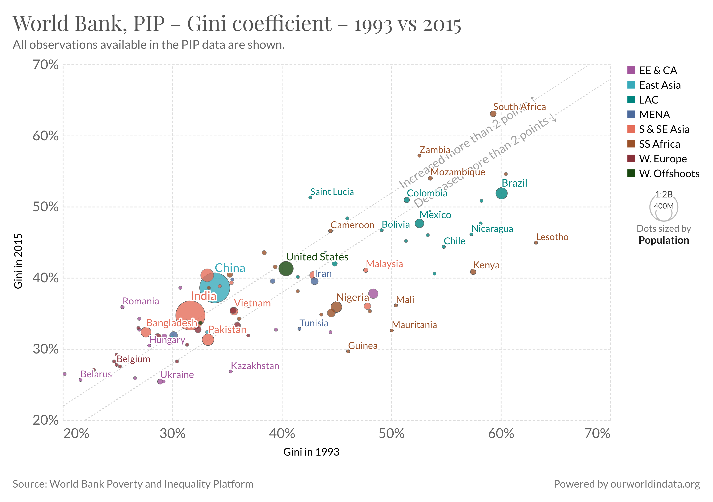

| PIP: Gini | WID: Top 1pc share – pretax | |||||||
|---|---|---|---|---|---|---|---|---|
| fall | stable | rise | total | fall | stable | rise | total | |
| region | ||||||||
| EE & CA | 6 | 2 | 9 | 17 | 3 | 2 | 13 | 18 |
| East Asia | 0 | 1 | 2 | 3 | 0 | 0 | 6 | 6 |
| LAC | 13 | 2 | 2 | 17 | 1 | 1 | 2 | 4 |
| MENA | 2 | 1 | 3 | 6 | 5 | 1 | 2 | 8 |
| Other N. America | nan | nan | nan | nan | nan | nan | nan | nan |
| Other Oceania | nan | nan | nan | nan | nan | nan | nan | nan |
| S & SE Asia | 4 | 1 | 5 | 10 | 3 | 2 | 6 | 11 |
| SS Africa | 14 | 1 | 8 | 23 | 12 | 2 | 8 | 22 |
| W. Europe | 4 | 5 | 7 | 16 | 1 | 2 | 15 | 18 |
| W. Offshoots | 0 | 1 | 2 | 3 | 0 | 0 | 4 | 4 |
| World | 43 | 14 | 38 | 95 | 25 | 10 | 56 | 91 |
Paper 1: Triangulating trends in inequality around the world from secondary databases
READING LIST: Bourguignon (2015) The share of wages in total GDP declined in a majority of countries (91 out of 133 with data) from 1995 to 2014 (ILO, 2016).
Other authors question the pre-eminence of globalization as the main driver of global inequality, noting that inequality trends differ across countries at similar levels of development and that are equally exposed to trade (Ravallion, 2018; Corlett, 2016). Ravallion (2018) stresses the vital role that natio
Key point: the share of income going to both the top 1 per cent and the bottom 50 per cent has increased in many countries in recent decades.
In 2021, while the very richest individuals buy trips to space, roughly three billion people are unable to afford a healthy diet. Even rich countries secured COVID vaccines for their entire population, low-income had barely begun. COVID vaccination rates at all, the richest countries had already administered more than one dose for every citizen.
Such
“Inequality defines our time,” states the UN Secretary-General.1
Just as the demand for data to monitor inequality globally is greater than ever, so is its supply.
In part, this increased concern is a reflection of events - of the severe and uneven impacts of the 2007-8 Global Financial Crisis, the COVID-19 pandemic and recent sharp rises in the cost of living.
Introduction
Economic inequalities around the world are enormous. As the very richest individuals buy trips to space, roughly three billion people are unable to afford a healthy diet.
Such stark disparities have gained more attention in recent decades, among policimakers, academics and the public alike. “Inequality defines our time,” according to the UN Secretary-General.2
In part at least, this increased concern reflects an increase in the availability of distributional data. New and expanded sources of data have shed new light on extent of inequality around the world and how it is changing. This has enabled concerns about high or rising inequality to be expressed in new ways, formulated more precisely and subsequently monitored. The supply and demand for global data on inequality have been mutually reinforcing.
Two sources of data have been particularly impactful in this regard. One is the World Bank’s harmonized collection of household survey data, published online through its Poverty and Inequality Platform (PIP). Another is the collection of inequality estimates, most notably top income shares, brought together at the World Inequality Database (WID).3
These two sources are the only regularly-updated databases that provide global coverage of distributional data on a relatively comparable basis.4
Both have played substantial agenda-setting roles in academic research, policy and public debate.
The World Bank data is especially prominent within international development policy, notably being used to monitor many of the UN Sustainable Development Goals. Academic research on global inequality has also largely relied on this data (Kanbur2022-lk?; Lakner and Milanovic 2016; Anand and Segal 2015; Nino-Zarazua2017-tv?; Ravallion2014-mk?). [TODO: Check and more refs.].
The WID database emerged along with the burgeoning literature on top incomes, acting as a central repository and, increasingly, coordinating institution. The 1%
Two worlds of inequality measurement
As well as being the the two not just two different databases. They in some sense represent two different worlds of inequality measurement.
Different methods. These yield different pictures of the extent of inequality and how it has changed over time. Motivated by different ideas about the salient factors shaping inequality.
PIP
WID
They differ as to how ubiquitous a phenomenon rising inequality is around the world. The view from World Inequality Database and its associated global report is that inequality is rising in ‘nearly everywhere’ (Alvaredo et al. 2018; Chancel et al. 2021).5 In contrast, the World Bank data and its biannual report offers a much more mixed picture – in which inequality is rising and falling in roughly equal numbers of countries.
Decompositions of global inequality into between- and within-country components.
Capital vs labour share. .– including fundamental laws of capitalism with regard to capital accumulation (Piketty) –
The disconnect between these datasets devaules them both
There remains fundamental ambiguity surrounding which of two possible worlds we live in.
The ‘WID world’ rising inequality within countries has been an almost universal phenomenon. suggests the winners from globalization and economic growth overwhelmingly have been a global elite. It sees the bulk of global inequalities as lying within nations, but emphasises global factors in terms of causes and hence the need for international coordination to combat inequality.
The ‘PIP world’ – within-country inequality trends in recent decades have been mixed, and the differences in average incomes between countries remain the lion’s share of the globally.As such the importance of national policy (Ravallion, 2018; Corlett, 2016). access to both produced and human capital.
Knowing which of these worlds we live in matters a great deal – for our understanding of inequality today, how it has changed, and also where efforts to combat inequality in the future are likely to be most successful.
Trouble is that these are all bundled up. You must chose. On what basis can you make a choice?
Known problems on both sides.
For PIP – top incomes, and lack of comparability of the survey data – notably mix of incme and consumption data.
For WID – tha many assumptions. An emphasis placed on the incorporation of tax data, but when taking a global view confonte by the fact that such tax data is often nonexistent. Top income corrections based on strong assumptions.
Given the presentation, the extent to which different assumptions, indices, methodological choices affects the data and – is not something that can be read off’ the data.
In using the datasets a global view on inequality, requires choosing wholesale between methodological ‘bundles’ whose relative strengths and weaknesses, applied globally, are not well understood.
Also makes for a very confusing terrain for policymakers, media and the public.
The two datasets are incredible efforts, involving the work of hundreds of researchers. Both datasets have continued to improve adn expand. In terms of data availability we are thus in a better position than ever to take a global viw on inequlity. And yet, amidst this wealth of data, limited understanding of very basics concerning inequality around the world.
Outline: Connecting the two worlds
(In this section I will explain the plan for the paper)
In this paper I aim to bring these two worlds of inequality measurement closer. To Triangulate what they do agree on and identify where they disagree.
The first, most obvious, step is simply to compare the in a systemtatic way. This very basic step is curiously lacking in the literature. We begin by comparing trends in each world based on the inequality indices most typical in each: the Gini coefficient for the PIP data, and the top 1% share of pre-tax income for WID.
Given incomplete coverage in both datasets, we ‘line up’ estimates to reference years to see change over time. We use two periods, presenting two different tradeoffs with respect to data coverage. The first is 1993-2018?? This maximises global coverage – 100 countries covering roughly 90% of the world poplation (Figure XX). The downside is that this period misses out – transition, liberalisation and structural adjustment. Question begging, by avoiding specifically the period where inequality thought to rise.
The second is 1980-2018. Here we lose coverage, especially in the PIP data (Figure XX).
The two measures selected – Gini coefficient of disposable income/consumption, and the top 1% share of pre-tax income – are where the PIP and WID worlds respectively are at their furthest apart. Yet in terms of broad global trends, there is much that even these very different measures can agree on: - x, - y, - z.
There are big differences though: - Somewhat more pronounced rise among advanced economies. - Big divergence in trend some of the most populous countries
The rest of the paper is about understanding where those differences emerge.
Inequality indices chosen. We align. Compare Top 1%. And Gini.
- Explain results.
We look at different income concepts for the small number of coutnries for which such data exists. To this end we also include data from the Luxembourg Income Study. Similar to PIP in that it relies on survey data. But provides access to microdata, allowing for the construction of different welfare aggregates. We focus on the countries with the biggest difference in trend and biggest population. I.e. those that contribute most to the difference in the weighted an unweigted global averages.
What I won’t do is a detailed lining up. Although both institutions continue to take many steps to provide transparency and reproducibility to their estimates, they remain a black box. Makes it impossible to do this lining up. In many particular contexts – where detailed lining up is possible – there relative strengths and weaknesses may be clear. (This is what Morllei does. And Nolan). But at the global level the makes this impractical.
- Summarise: really depends on the country.
2. Comparing the two worlds
What we’re trying to do with triangulation is see whether they show a qualitively similar picture of whether, and how rapidly, inequality was rising or falling.
But what would ‘similar’ be for Gini and top 1. Not a 1 point move.
The main way of operationalising ‘similar’ is to look at Relative change: a percentage, rather than percentage point. We can put some threshold and see if there were rises or falls.
Possibly a footnote: No reason to expect this given the properties of the two measures. If we take lognormality we see… (MAke a chart in appendix - where we plot Gini against top 10 and top 1% assuming lognormality, and then add actual data for a particular country.) How unlognormal the top is would be another way to judge similarity. Rather than doing this, we bridge by aligning the indices.
We also do absolute change: a percentage point. This is more intuitive. But somewhat arbitrary – differences in levels affect assessment of differences in trends. (Or possibly empahasise this measure if there is little difference to the relative threshold.)
A third way is residuals from a regression of the two measures
- This we will use to see countries that are particular outliers.
To get an overview: I’ll use the unweigted and population weighted average. The first represents change in inequality in the average country.
All broken down by region.
Inequality since 1993
In Figure 1 we plot the level of inequality in 1993 and 2015 against each other, using the inequality measures ‘typical’ of each dataset.
To help with the interpretation, a band is shown along the 45-degree line. Countries falling within this band saw little change in inequality. Countries falling above it saw a substantive rise in inequality between the two periods. Countries falling below it saw a substantive fall. ‘Substantive’ here is defined as a change of more than 2 percentage points in the case of the PIP Gini coefficient, and more than 1 percentage point in the case of the WID top 1% share.
From the visual inspection, in conjunction with Table 3. In both sets of data, we see a mix of countries with rising and falling inequality. In the case of WID top 1% share, far more rises than falls. In both we see some convergence – . This is largely driven by regional dynamics.
This is confirmed in summary tables. and this … Tolerance: different thresholds due to different range of data. In the appendix we consider relative thresholds (+/-5%), which makes little difference.
Considering all available observations in each dataset, we see:
- Much bigger rise in the weigted average in WID.
Whilst the number of countries available in the two datasets is very similar, they are not the same countries. In particular, LAC is largely absent from WID. (Footnote about LAC in WID?? Are the global results based on linear interpolation?… An interpolation that contradicts the survey data?) Also fewer Sub-Saharan African countries. In PIP, fewer rich countries in Western Europe and its offshoots.
Importantly, … are not neutral with respect to.The regions where WID is lacking coverage – LAC and SSA – are regions in which inequality was generally falling, according to the PIP Gini coefficient. The reverse is also the case: Regions that PIP are lacking – high income countries in W. Europe and offshoots – were regions where inequality was generally rising, according to the WID top 1% shares data.
As such, differences in coverage already go some way to explaining the differences between the two datasets. Figure 2 and Table 4 show the data, restricting the observations to those available in both datasets. This brings the two series closer. Explain. (Coverage falls)
It is worth emphasising the similarities:
Nevertheless, there are clearly differences in what – even after aligning coverage. Are these about the metric, or other methodological differences? WE will see later on.
Figures 1-2


Tables 1-2
| PIP: Gini | WID: Top 1pc share – pretax | |||||||
|---|---|---|---|---|---|---|---|---|
| fall | stable | rise | total | fall | stable | rise | total | |
| region | ||||||||
| EE & CA | 5 | 1 | 8 | 14 | 2 | 1 | 11 | 14 |
| East Asia | 0 | 1 | 2 | 3 | 0 | 0 | 3 | 3 |
| LAC | 3 | 1 | 0 | 4 | 1 | 1 | 2 | 4 |
| MENA | 2 | 0 | 3 | 5 | 4 | 0 | 1 | 5 |
| Other N. America | nan | nan | nan | nan | nan | nan | nan | nan |
| Other Oceania | nan | nan | nan | nan | nan | nan | nan | nan |
| S & SE Asia | 4 | 1 | 5 | 10 | 3 | 2 | 5 | 10 |
| SS Africa | 10 | 1 | 7 | 18 | 10 | 1 | 7 | 18 |
| W. Europe | 4 | 4 | 7 | 15 | 1 | 1 | 13 | 15 |
| W. Offshoots | 0 | 1 | 2 | 3 | 0 | 0 | 3 | 3 |
| World | 28 | 10 | 34 | 72 | 21 | 6 | 45 | 72 |
Tables 3-4
| PIP: Gini | WID: Top 1pc share – pretax | |||||||||||
|---|---|---|---|---|---|---|---|---|---|---|---|---|
| Avg | Wt. avg | Pop. coverage | Avg | Wt. avg | Pop. coverage | |||||||
| 1993 | 2015 | 1993 | 2015 | 1993 | 2015 | 1993 | 2015 | 1993 | 2015 | 1993 | 2015 | |
| region | ||||||||||||
| EE & CA | 31.3 | 31.5 | 37.4 | 33.3 | 0.83 | 0.79 | 9.7 | 11.8 | 10.6 | 15.0 | 0.83 | 0.79 |
| East Asia | 32.3 | 34.1 | 33.8 | 38.5 | 0.86 | 0.87 | 11.7 | 15.3 | 9.4 | 13.9 | 0.98 | 0.98 |
| LAC | 51.3 | 46.6 | 54.3 | 48.6 | 0.87 | 0.87 | 17.4 | 20.4 | 19.0 | 22.5 | 0.67 | 0.67 |
| MENA | 38.5 | 37.7 | 38.3 | 37.7 | 0.65 | 0.60 | 19.7 | 18.5 | 19.5 | 19.1 | 0.65 | 0.62 |
| Other N. America | nan | nan | nan | nan | nan | nan | nan | nan | nan | nan | nan | nan |
| Other Oceania | nan | nan | nan | nan | nan | nan | nan | nan | nan | nan | nan | nan |
| S & SE Asia | 36.9 | 37.0 | 33.2 | 35.3 | 0.95 | 0.94 | 16.4 | 17.7 | 14.5 | 20.0 | 0.95 | 0.95 |
| SS Africa | 47.4 | 42.4 | 46.3 | 41.1 | 0.73 | 0.72 | 21.1 | 16.8 | 18.4 | 15.5 | 0.64 | 0.65 |
| W. Europe | 30.5 | 31.3 | 32.5 | 32.8 | 0.97 | 0.97 | 8.7 | 10.8 | 9.0 | 11.5 | 0.98 | 0.98 |
| W. Offshoots | 34.7 | 36.2 | 39.1 | 40.1 | 0.99 | 0.99 | 10.7 | 14.3 | 13.4 | 18.1 | 1.00 | 1.00 |
| World | 39.8 | 38.0 | 37.0 | 37.9 | 0.87 | 0.86 | 14.5 | 14.8 | 13.1 | 17.2 | 0.88 | 0.86 |
| PIP: Gini | WID: Top 1pc share – pretax | |||||||||||
|---|---|---|---|---|---|---|---|---|---|---|---|---|
| Avg | Wt. avg | Pop. coverage | Avg | Wt. avg | Pop. coverage | |||||||
| 1993 | 2015 | 1993 | 2015 | 1993 | 2015 | 1993 | 2015 | 1993 | 2015 | 1993 | 2015 | |
| region | ||||||||||||
| EE & CA | 31.1 | 31.4 | 37.6 | 33.4 | 0.80 | 0.77 | 9.9 | 12.3 | 10.7 | 15.2 | 0.80 | 0.77 |
| East Asia | 32.3 | 34.1 | 33.8 | 38.5 | 0.86 | 0.87 | 11.6 | 16.4 | 9.3 | 14.1 | 0.86 | 0.87 |
| LAC | 52.3 | 48.2 | 55.4 | 49.6 | 0.67 | 0.67 | 17.4 | 20.4 | 19.0 | 22.5 | 0.67 | 0.67 |
| MENA | 38.3 | 37.3 | 38.1 | 37.5 | 0.58 | 0.54 | 18.7 | 17.1 | 19.3 | 18.9 | 0.58 | 0.54 |
| Other N. America | nan | nan | nan | nan | nan | nan | nan | nan | nan | nan | nan | nan |
| Other Oceania | nan | nan | nan | nan | nan | nan | nan | nan | nan | nan | nan | nan |
| S & SE Asia | 36.9 | 37.0 | 33.2 | 35.3 | 0.95 | 0.94 | 17.0 | 18.1 | 14.5 | 20.1 | 0.95 | 0.94 |
| SS Africa | 47.2 | 42.3 | 44.7 | 39.2 | 0.59 | 0.61 | 21.0 | 16.6 | 18.3 | 15.0 | 0.59 | 0.61 |
| W. Europe | 30.5 | 31.3 | 32.5 | 32.8 | 0.95 | 0.95 | 8.8 | 10.9 | 8.9 | 11.5 | 0.95 | 0.95 |
| W. Offshoots | 34.7 | 36.2 | 39.1 | 40.1 | 0.99 | 0.99 | 11.0 | 15.5 | 13.5 | 18.2 | 0.99 | 0.99 |
| World | 37.7 | 36.5 | 36.5 | 37.6 | 0.83 | 0.82 | 14.6 | 15.0 | 13.2 | 17.3 | 0.83 | 0.82 |
Figures 1-4
PIP: Gini coefficient WID: Top 1% share
| source_var | Entity | region | Year | PIP: Gini | WID: Top 1pc share – pretax |
|---|---|---|---|---|---|
| 0 | Albania | EE & CA | 1996.0 | 27.010342 | 8.14 |
| 1 | Albania | EE & CA | 2015.0 | 32.753732 | 9.62 |
| 2 | Angola | SS Africa | 1995.0 | NaN | 21.98 |
| 3 | Angola | SS Africa | 2018.0 | NaN | 25.98 |
| 4 | Argentina | LAC | 1993.0 | 44.856286 | 13.98 |
| ... | ... | ... | ... | ... | ... |
| 263 | Vietnam | S & SE Asia | 2016.0 | 35.266739 | 16.51 |
| 264 | Zambia | SS Africa | 1993.0 | 52.608612 | 19.54 |
| 265 | Zambia | SS Africa | 2015.0 | 57.136058 | 23.17 |
| 266 | Zimbabwe | SS Africa | 1991.0 | NaN | 17.41 |
| 267 | Zimbabwe | SS Africa | 2017.0 | NaN | 17.48 |
268 rows × 5 columns
| source_var | pip_welfare | Year1993 | Entity | value1993 | Year2015 | value2015 | region | pop1993 | pop2015 | change | absolute_tolerance | relative_tolerance | absolute_fall | absolute_stable | absolute_rise | relative_fall | relative_stable | relative_rise | |
|---|---|---|---|---|---|---|---|---|---|---|---|---|---|---|---|---|---|---|---|
| 0 | PIP: Gini | Income | 1993 | Argentina | 44.856286 | 2016 | 42.032529 | LAC | 34027240.0 | 43257064.0 | -2.823757 | 1.0 | 2.242814 | 1 | 0 | 0 | 1 | 0 | 0 |
| 1 | PIP: Gini | Income | 1995 | Australia | 32.581990 | 2016 | 33.685811 | W. Offshoots | 17631514.0 | 23820240.0 | 1.103820 | 1.0 | 1.629100 | 0 | 0 | 1 | 0 | 1 | 0 |
| 2 | PIP: Gini | Income | 1994 | Austria | 31.322342 | 2015 | 30.532775 | W. Europe | 7905280.0 | 8642422.0 | -0.789567 | 1.0 | 1.566117 | 0 | 1 | 0 | 0 | 1 | 0 |
| 3 | PIP: Gini | Income | 1992 | Belgium | 24.951877 | 2015 | 27.729463 | W. Europe | 10043738.0 | 11248306.0 | 2.777585 | 1.0 | 1.247594 | 0 | 0 | 1 | 0 | 0 | 1 |
| 4 | PIP: Gini | Income | 1992 | Bolivia | 49.110053 | 2015 | 46.739953 | LAC | 7544494.0 | 11090090.0 | -2.370100 | 1.0 | 2.455503 | 1 | 0 | 0 | 0 | 1 | 0 |
| ... | ... | ... | ... | ... | ... | ... | ... | ... | ... | ... | ... | ... | ... | ... | ... | ... | ... | ... | ... |
| 181 | WID: Top 1pc share – pretax | NaN | 1993 | United Kingdom | 9.720000 | 2015 | 12.300000 | W. Europe | 57647464.0 | 65224368.0 | 2.580000 | 1.0 | 0.486000 | 0 | 0 | 1 | 0 | 0 | 1 |
| 182 | WID: Top 1pc share – pretax | NaN | 1993 | United States | 14.140000 | 2015 | 18.890000 | W. Offshoots | 258779760.0 | 324607776.0 | 4.750000 | 1.0 | 0.707000 | 0 | 0 | 1 | 0 | 0 | 1 |
| 183 | WID: Top 1pc share – pretax | NaN | 1992 | Vietnam | 16.420000 | 2016 | 16.510000 | S & SE Asia | 71176408.0 | 92191400.0 | 0.090000 | 1.0 | 0.821000 | 0 | 1 | 0 | 0 | 1 | 0 |
| 184 | WID: Top 1pc share – pretax | NaN | 1993 | Zambia | 19.540000 | 2015 | 23.170000 | SS Africa | 8270921.0 | 16248231.0 | 3.630000 | 1.0 | 0.977000 | 0 | 0 | 1 | 0 | 0 | 1 |
| 185 | WID: Top 1pc share – pretax | NaN | 1991 | Zimbabwe | 17.410000 | 2017 | 17.480000 | SS Africa | 10794921.0 | 14154937.0 | 0.070000 | 1.0 | 0.870500 | 0 | 1 | 0 | 0 | 1 | 0 |
186 rows × 19 columns
Averages + pop coverage
Country changes (also see which countries strongly disagree in terms of direction)
Inequality since 1980
Figures X-Y
PIP: Gini coefficient WID: Top 1% share;
3. Aligning indices
Show that measure doesn’t matter for WID until top 1 (check Palma ratio)
Check out how much different metrics matter for PIP.
Do a 1% vs 1% comparison
Do a Gini vs Gini comparison
All for 1993 and 1980.
Does it make a difference whether we look at Gini or top 10%?
People worry about whether Gini masks what’s happening at the top.
Empirically: - Make a linear model of top 10% on Gini, for each source separately - Make predicted top 10% - Take a look at the R2 - Investigate individual countries with very poor predictions
Sub-Saharan Africa: example where the Gini fell in more cases than the top 10%.
Bridging the gap for particular countries
Aligning coverage
Global data on inequality
Global databases
A global view faces the hard limitation of the underlying data. This has two sides: firstly is there any data? Secondly the comparability of the data, across countries and over time.
Much improved – harmonized secondary databases. Three of note.
PIP
WID
LIS
Two worlds of inequality measurement
Connecting up the worlds is valuable
- for Policy
- for academic research
Triangulating a global view
Since 1990
Since 1980
Comparing metrics
Since 1990
Similarities:
Convergence – Smaller rises in coutries that started out with high inequality. Driven regionally. (We could do a test for this.)
Indeed for some regions very similar picture:
- MENA - Roughly 2 point fall, both Gini and top 10%. Only one country with a rise: Not total agreeement on coverage (one country either side)
- South and South East Asia – Very similar not weighting by population. But wildly different when weighting by population, due to the much much stronger rise
- Sub-Saharan Afric – Very similar across sources. Top 10: Roughly even mix of rises and falling countries, but with a 3 point fall on average. Gini: More falls, 5 point on average. (Mention data quality issues: e.g. Kenya big fall. Lesoto big fall. But how comparable are the surveys?? Same surveys underlie WID...)
- Western Europe – Rises in a majority of countries, but relatively moderate of 1-2 points (Whether Gini of top 10).Differences:
Verry different bottom line at the global level:
PIP: roughly equal numbers falling and rising. 0 average change – though a modest rise when pop weighted (2 points). Same whether Gini or Top 10. That’s without LAtin America (Which WID is missing). Includung LatAm tips nudges it (with about a 1 point fall unweighter and 1 point rise weighted)
WID: Far more countries with rising inequality. On average a 3 point rise (whether top 10 or Gini) – [Better to express these relative to the level of ineq. i.e. % increase rather than % point increase? A point rise means ‘less’ in WID terms because inequality levels are much higher.] But the most stark difference comes when we weight by population. Some key populous countries: India, China, US?, Indonesia? Russia
That difference is driven by particular regions:
More countries with rises. LArger rises. Especially larger populations. Average view very different:
Countries where the sources paint a radically different picture that affect the aggregate results:
- India: Insane rise in WID 34->56
- China:
- Russia: Massive drop in PIP. Insane rise in WID.
- USA: Much larger rise in WID.
What explains the different trends in these countries? (We can maybe look in more detail, at different welfare concepts etc.)
It sometimes goes the other way: Indonesia – Rise in PIP, fall in WID.
:::
Method 2: Use a regression to obtain the time trend
Results for a range of inequality metrics
::: {.callout-note collapse=“true” appearance=“minimal”} ## Calculations for comparisons
Explaining differences between PIP and WID data
For a subset of countries we can bridge between the PIP and WID data
Besides the underlying data sources, there are many differences between what is being measured in the PIP and WID data - notably the welfare concept and unit of analysis/equivalization.
In order to get a better understanding of where differences between the datasets arise, for a subset of countries we can bridge between the two somewhat. For example:
- WID has post-tax income series for some countries
- We can use LIS to look at how changing the welfare concept, unit of analysis, equivalisation affects things. (For equivalisation, we could also possibly use the newly available PIP harmonized microdata).
More in-depth discussion of particular outliers
- Russia is a very notable case where the two datasets tell very different stories.
Conclusion
Appendix
Data coverage
1993-2015
Alvaredo, F, L Chancel, T Piketty, E Saez, and G Zucman. 2018. World Inequality Report 2018. Harvard University Press.
Anand, Sudhir, and Paul Segal. 2015. “The Global Distribution of Income.” In Handbook of Income Distribution, 2:937–79. Elsevier.
Atkinson, Anthony B., and Andrea Brandolini. 2001. “Promise and Pitfalls in the Use of "Secondary" Data-Sets: Income Inequality in OECD Countries As a Case Study.” Journal of Economic Literature 39 (3): 771–99. https://doi.org/10.1257/jel.39.3.771.
Chancel, Lucas, Thomas Piketty, Emmanuel Saez, and Gabriel Zucman. 2021. “World Inequality Report 2022.”
Lakner, Christoph, and Branko Milanovic. 2016. “Global Income Distribution: From the Fall of the Berlin Wall to the Great Recession.” World Bank Econ. Rev. 30 (2): 203–32.
Footnotes
United Nations Secretary-General António Guterres made the comment in the 18th Nelson Mandela Annual Lecture in July 2020. See https://www.nelsonmandela.org/news/entry/annual-lecture-2020-secretary-general-guterress-full-speech.↩︎
United Nations Secretary-General António Guterres made the comment in the 18th Nelson Mandela Annual Lecture in July 2020. See https://www.nelsonmandela.org/news/entry/annual-lecture-2020-secretary-general-guterress-full-speech.↩︎
TODO: PIP used to be Povcal. It draws upon the work of various regional teams. WID used to be WTID.↩︎
EDIT: Both datasets suffer important limitations with respect to comparability acrosss time and location. These will be discussed in the data section below. Both datasets, however, take significant steps to harmonize, ex-post, the available underlying data. In this respect they can be distinguished from databases such as WIID and SWIID (Atkinson and Brandolini 2001)↩︎
Income and wealth inequalities have been on the rise nearly everywhere since the 1980s, following a series of deregulation and liberalization programs which took different forms in different countries. (Chancel et al. 2021, xx)
↩︎In recent decades, income inequality has increased in nearly all countries, but at different speeds… (Alvaredo et al. 2018, xx)